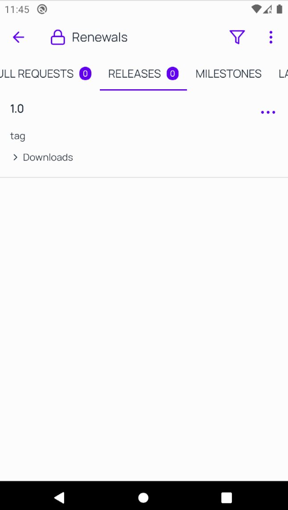
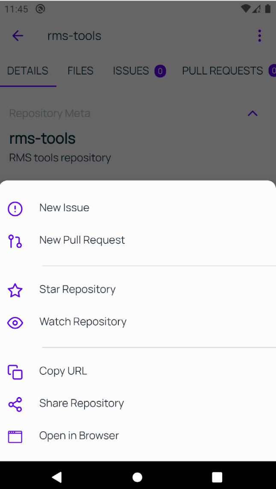
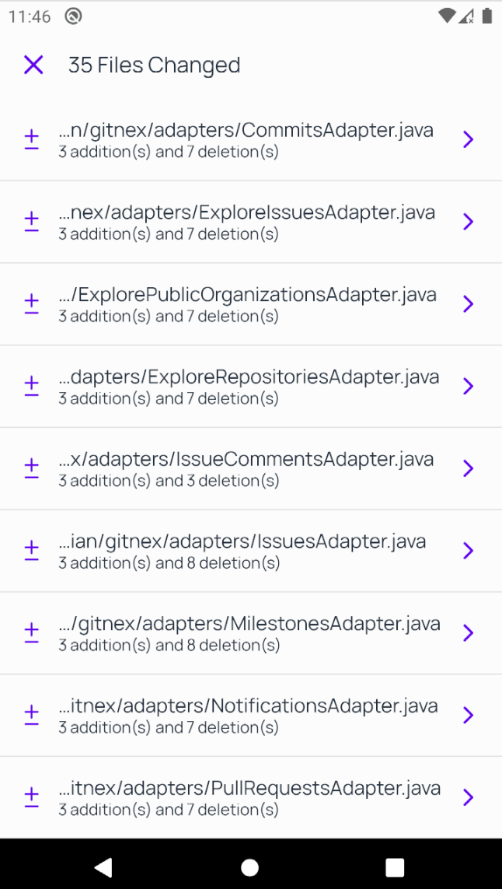
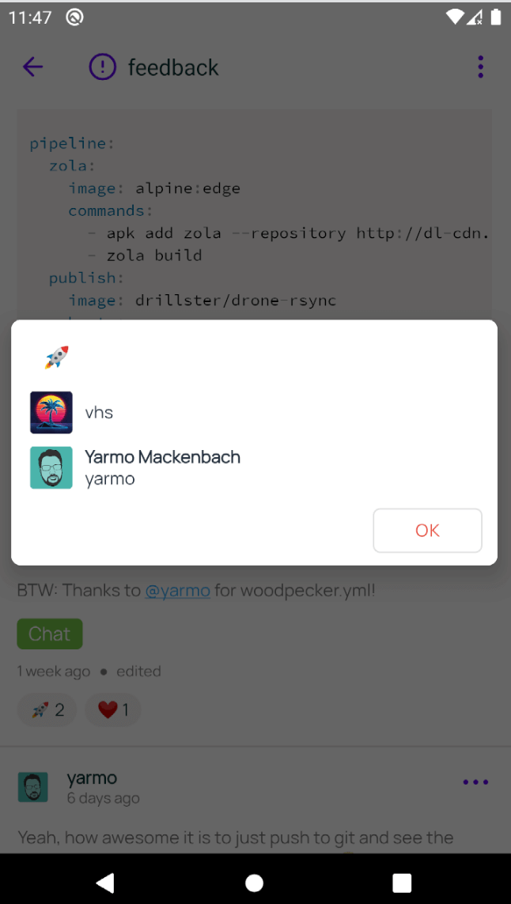
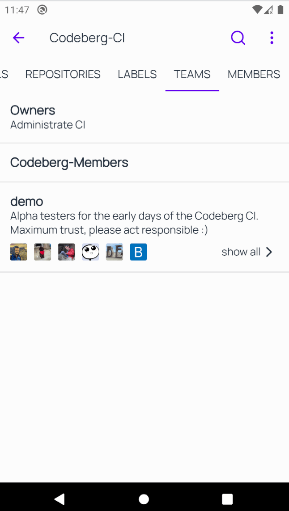

⚠️ Notice: GitNex 4.3.0 will drop support for Android 5. Going forward 5.0.0 will drop for Android 6.

List Tags

Hide Actions for non Admins

New Diff Viewer

Users List for Reactions

Redesigned organization Teams
- Improve Android back button for files browser
- Enhance account manager
- Improve notifications design, taps behavior, show icons for repository and commit
- Show state of pr/issue(closed or open or merged) in notifications
- Improve Markdown files rendering
- Support for Android 12
- In-app custom browser(tabs) for rendering links
- Improve commits UI
- Fix crash on issue/pr search
- Fix instances avatar for 1.15 and up
- Block fonts rendering in file viewer
- Fix load images in Markdown files and other fixes
- Fix file browser content doesn't match to the directory shown at the top after viewing a pr
- Fix connection error popup showing when there is connection
Don't forget to watch the video above to know the features and improvements.
Contribute Downloads